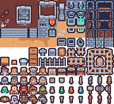

<!DOCTYPE html>
<html lang="en">
	<head>
		<meta charset="UTF-8" />
		<meta name="viewport" content="width=device-width, initial-scale=1.0" />
		<title>Thirteen Potions</title>
		<script src="./phaser.min.js"></script>
		<style type="text/css">
			html,
			body,
			#game-container {
				margin: 0;
				padding: 0;
				background: #3b2731;
			}

			#game-container {
				min-width: 100vw;
				min-height: 100vh;
				display: flex;
				align-items: center;
				justify-content: center;
			}
		</style>
		<script type="text/javascript">
			let config = {
				type: Phaser.AUTO,
				width: 720,
				height: 480,
				parent: "game-container",
				pixelArt: true,
				scene: {
					preload: preload,
					create: create,
					update: update,
				},
				physics: {
					default: "arcade",
					arcade: {
						gravity: { y: 0 }, // Top down game, so no gravity
					},
				},
			};

			let game = new Phaser.Game(config);
			let controls;
			let cursors;
			let player;

			// Runs once, loads up assets like images and audio
			function preload() {
				this.load.image("tiles", "./tilemap_packed.png");
				this.load.tilemapTiledJSON("map", "./mappy/map.json");
				this.load.spritesheet("knight", "./knight/knight_packed.png", {
					frameWidth: 16,
					frameHeight: 16,
				});
			}

			// Runs once, after all assets in preload
			function create() {
				const map = this.make.tilemap({
					key: "map",
					tileWidth: 16,
					tileHeight: 16,
				});
				const tileset = map.addTilesetImage("thirteen-potions", "tiles");

				// Parameters: layer name (or index) from Tiled, tileset, x, y
				const groundLayer = map.createLayer("Ground", tileset, 0, 0);
				const wallLayer = map.createLayer("Walls", tileset, 0, 0);
				wallLayer.setCollisionByExclusion([-1]);

				// const debugGraphics = this.add.graphics().setAlpha(0.75);
				// wallLayer.renderDebug(debugGraphics, {
				// 	tileColor: null, // Color of non-colliding tiles
				// 	collidingTileColor: new Phaser.Display.Color(243, 134, 48, 255), // Color of colliding tiles
				// 	faceColor: new Phaser.Display.Color(40, 39, 37, 255), // Color of colliding face edges
				// });

				// Adding player to the screen
				const spawnPoint = map.findObject(
					"Things",
					(obj) => obj.name === "Spawn"
				);

				player = this.physics.add
					.sprite(spawnPoint.x, spawnPoint.y, "knight")
					.setInteractive(this.input.makePixelPerfect());
				this.physics.add.collider(player, wallLayer);
				// player.setBounce(0.5);
				player.setCollideWorldBounds(true);

				this.anims.create({
					key: "right",
					frames: this.anims.generateFrameNumbers("knight", {
						start: 0,
						end: 1,
					}),
					frameRate: 10,
					repeat: -1,
				});

				this.anims.create({
					key: "left",
					frames: this.anims.generateFrameNumbers("knight", {
						start: 2,
						end: 3,
					}),
					frameRate: 10,
					repeat: -1,
				});

				this.anims.create({
					key: "up-right",
					frames: this.anims.generateFrameNumbers("knight", {
						start: 4,
						end: 5,
					}),
					frameRate: 10,
					repeat: -1,
				});

				this.anims.create({
					key: "up-left",
					frames: this.anims.generateFrameNumbers("knight", {
						start: 6,
						end: 7,
					}),
					frameRate: 10,
					repeat: -1,
				});

				// Phaser default camera
				let camera = this.cameras.main;
				camera.zoom = 4;
				camera.setViewport(0, 0, 720, 480);
				camera.setBounds(0, 0, 720, 480);
				camera.startFollow(player);

				cursors = this.input.keyboard.createCursorKeys();
			}

			// Runs once per frame for the duration of the scene
			function update(time, delta) {
				const speed = 100;
				const prevVelocity = player.body.velocity.clone();
				player.body.setVelocity(0);

				// Horizontal movement
				if (cursors.left.isDown) {
					player.body.setVelocityX(-100);
				} else if (cursors.right.isDown) {
					player.body.setVelocityX(100);
				}

				// Vertical movement
				if (cursors.up.isDown) {
					player.body.setVelocityY(-100);
				} else if (cursors.down.isDown) {
					player.body.setVelocityY(100);
				}

				// Normalize and scale the velocity so that player can't move faster along a diagonal
				player.body.velocity.normalize().scale(speed);

				if (cursors.up.isDown && cursors.right.isDown) {
					player.anims.play("up-right", true);
				} else if (cursors.up.isDown && cursors.left.isDown) {
					player.anims.play("up-left", true);
				} else if (cursors.left.isDown) {
					player.anims.play("left", true);
				} else if (cursors.right.isDown) {
					player.anims.play("right", true);
				} else if (cursors.up.isDown) {
					player.anims.play("up-right", true);
				} else if (cursors.down.isDown) {
					player.anims.play("right", true);
				} else {
					player.anims.stop();

					// If we were moving, pick and idle frame to use
					if (prevVelocity.x < 0) player.setTexture("knight", 2); // look left
					else if (prevVelocity.x > 0)
						player.setTexture("knight", 0); // look right
					else if (prevVelocity.y < 0)
						player.setTexture("knight", 4); // look up
					else if (prevVelocity.y > 0) player.setTexture("knight", 0); // look down
				}
			}
		</script>
	</head>
	<body>
		<div id="game-container"></div>
		<!--  -->
	</body>
</html>
